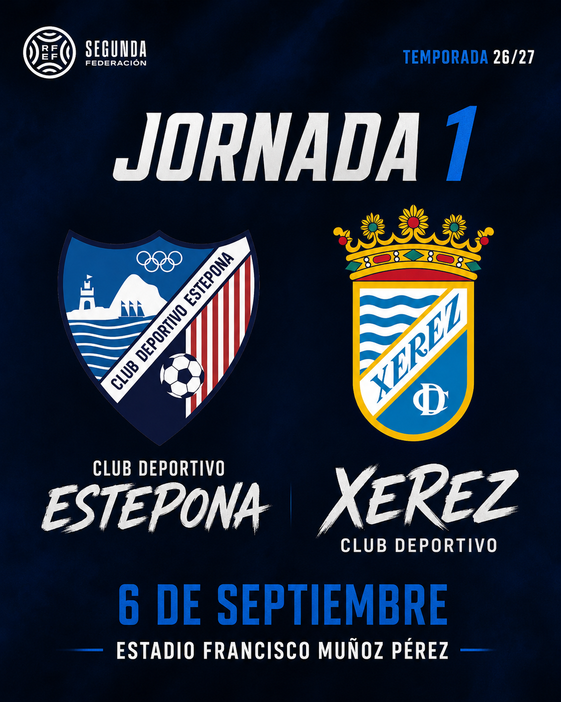

Xerez CD open the league on 6 September against Estepona and close at Badajoz on 9 May

Foto: PuroXerecismoThe RFEF has released the full Group IV Segunda Federación fixture list. Xerez CD begin at home against CD Estepona and wrap up the regular phase away at Badajoz.
Xerez CD now know their full roadmap for the 2026/27 season. The Royal Spanish Football Federation has published the complete fixture list for Group IV of Segunda Federación, which kicks off on 6 September with Xerez CD hosting CD Estepona at the Estadio Municipal de Chapín.
The regular phase will conclude on 9 May, with Xerez CD making the trip to Badajoz — one of the toughest venues in the group. In between, 34 rounds of home and away fixtures lay out a long and demanding competition against sides from Andalusia, Extremadura and the Canary Islands.
Xerez CD go into the season with an openly stated aim of challenging for promotion to Primera Federación. The opener against Estepona at Chapín will be an early indicator of the level of the squad that the coaching staff have been building throughout pre-season.
← Back to home